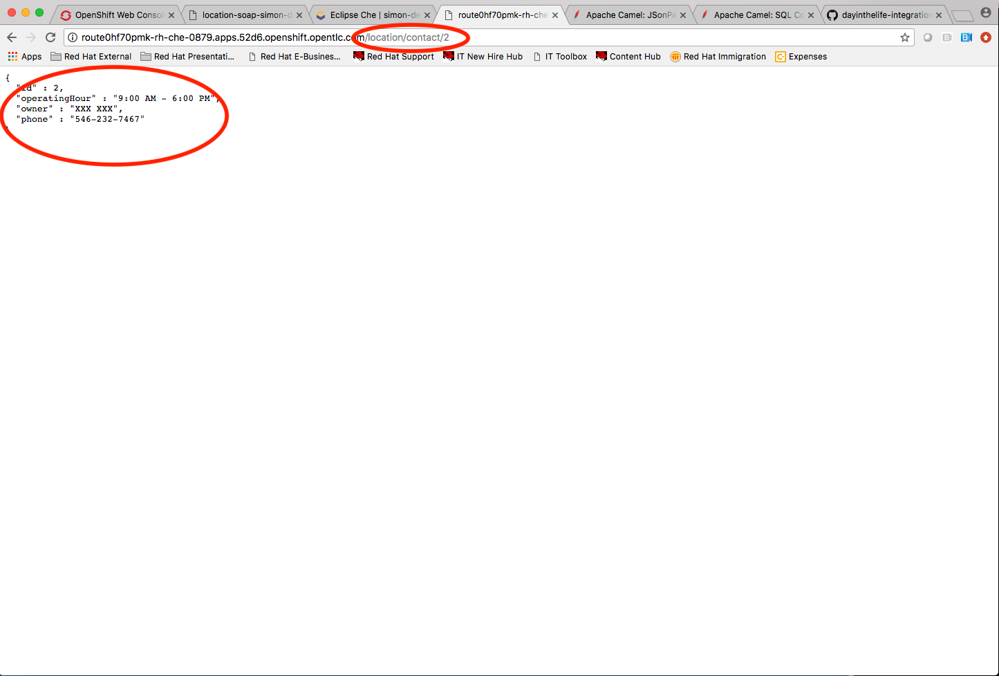
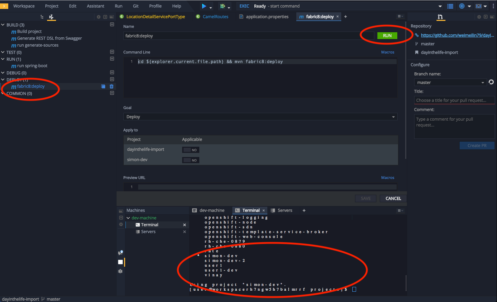

Lab 4
SOAP to REST (Optional)
Contract-first API development wrapping an existing SOAP service, implemented using Eclipse Che
- Duration: 20 mins
- Audience: Developers and Architects

Overview
Another important use case in developing API's is to take an existing legacy SOAP service and wrap it with a new RESTful endpoint. This SOAP to REST transformation is implemented in the API service layer (Fuse). This lab will walk you through taking an existing SOAP contract (WSDL), converting it to Java POJO's and exposing it using Camel REST DSL.
Why Red Hat?
Eclipse Che, our online IDE, provides important functionality for implementing API services. In this lab you can see how our Eclipse Che and Fuse can help with SOAP to REST transformation on OpenShift.
Lab Instructions (Optional)
Step 1: Import the sample SOAP project into your Openshift project
Navigate back to your Eclipse Che workspace and open the terminal window.

Log into the Openshift console:

Obtain your user login command by clicking on your username on the top right hand corner and select Copy Login Command

Paste the login command for Openshift via the Terminal window. Use the double check the {OPENSHIFT_APP_URL} matches the environment given to you by the instructor
oc login {OPENSHIFT_APP_URL} --token=XXXXXBuild and deploy the SOAP application using source to image(S2i) template. Paste the commend to the terminal.
oc new-app s2i-fuse71-spring-boot-camel -p GIT_REPO=https://github.com/epe105/dayinthelife-integration -p CONTEXT_DIR=/projects/location-soap -p APP_NAME=location-soap -p GIT_REF=master -n [OCPPROJECT]*Remember to replace the [OCPPROJECT] with the OpenShift project(NameSpace) you used in last lab. [OCPPROJECT] should be your username*
Once the build and deploy is complete, navigate back to your Openshift web console and verify the project is running.

Step 2: Modify the skeleton location-soap2rest project
In the OpenShift console, click on the route associated with the
location-soapdeployment. A pop-up will appear. Append the/ws/location?wsdlpath to the URI and verify the WSDL appears. Copy the link to the clipboard.
Return to your Eclipse Che workspace and open the
dayintelife-import/location-soap2restproject.- Open the
pom.xmlfile and scroll to the bottom. - Uncomment out the
cxf-codegen-pluginentry at the bottom. - Update the
<wsdl>entry with your fully qualified WSDL URL e.g.http://location-soap-userX.apps.ocp-ai.redhatgov.io/ws/location?wsdl. - Be sure to replace userX with your username.

- Open the
We now need to generate the POJO objects from the WSDL contract. To do this, change to the Manage commands view and double-click the
run generate-sourcesscript. Click Run to execute the script.
Once the script has completed, navigate back to the Workspace view and open the
src/main/java/com/redhatfolder. Notice that there are a bunch of new POJO classes that were created by the Maven script.
Open up the
CamelRoutes.javafile. Notice that the existing implementation is barebones. First of all, we need to enter the SOAP service address and WSDL location for our CXF client to call after the camelContext and before the @Override.... @Autowired private CamelContext camelContext; private static final String SERVICE_ADDRESS = "http://localhost:8080/ws/location"; private static final String WSDL_URL = "http://localhost:8080/ws/location?wsdl"; @Override public void configure() throws Exception { ...Next after the restConfiguration() method, we need to create our Camel route implementation and create the RESTful endpoint.
- To do this, include the following code (making sure to update the {YOUR_NAME_SPACE}, {OPENSHIFT_APP_URL} and username values in the
to("cxf://URL): - For example YOUR_NAME_SPACE should be userX and {OPENSHIFT_APP_URL} could be apps.ocp-ai.redhatgov.io.
- Check with your instructor if you are not sure.
... rest("/location").description("Location information") .produces("application/json") .get("/contact/{id}").description("Location Contact Info") .responseMessage().code(200).message("Data successfully returned").endResponseMessage() .to("direct:getalllocationphone") ; from("direct:getalllocationphone") .setBody().simple("${headers.id}") .unmarshal().json(JsonLibrary.Jackson) .to("cxf://http://location-soap-{YOUR_NAME_SPACE}.{OPENSHIFT_APP_URL}/ws/location?serviceClass=com.redhat.LocationDetailServicePortType&defaultOperationName=contact") .process( new Processor(){ @Override public void process(Exchange exchange) throws Exception { //LocationDetail locationDetail = new LocationDetail(); //locationDetail.setId(Integer.valueOf((String)exchange.getIn().getHeader("id"))); MessageContentsList list = (MessageContentsList)exchange.getIn().getBody(); exchange.getOut().setBody((ContactInfo)list.get(0)); } } ) ;- To do this, include the following code (making sure to update the {YOUR_NAME_SPACE}, {OPENSHIFT_APP_URL} and username values in the
Now that we have our API service implementation, we can try to test this locally. Navigate back to the Manage commands view and execute the
run spring-bootscript.- Make sure any previous runs from prior labs are stopped
- Click the Run button.

Once the application starts, navigate to the Servers window and click on the URL corresponding to port 8080. A new tab should appear:

In the new tab, append the URL with the following URI:
/location/contact/2- A contact should be returned:
Now that we've successfully tested our new SOAP to REST service locally, we can deploy it to OpenShift. Stop the running application by clicking Cancel.
Open the
fabic8:deployscript and hit the Run button to deploy it to OpenShift.
If the deployment script completes successfully, navigate back to your OCPPROJECT web console and verify the pod is running

Click on the route link above the location-soap2rest pod and append
/location/contact/2to the URI. As a result, you should get a contact back.
Congratulations! You have created a SOAP to REST transformation API.
Summary
You have now successfully created a contract-first API using a SOAP WSDL contract together with generated Camel RESTdsl.